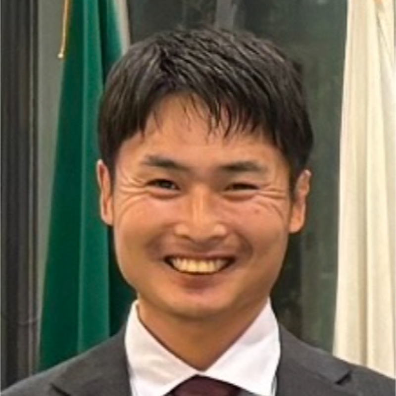

Kazuki Kimura
Representative Director
Research Lead, Citadel AI · Community Lead, ALIGN
Previously on the International Affairs team at the Japan AI Safety Institute, Kazuki now leads research at Citadel AI, working with Japan AISI on AI testing and evaluation. He brought the TARA technical AI safety accelerator to Tokyo and ran its first cohort, and facilitates Japanese-language BlueDot Impact courses.